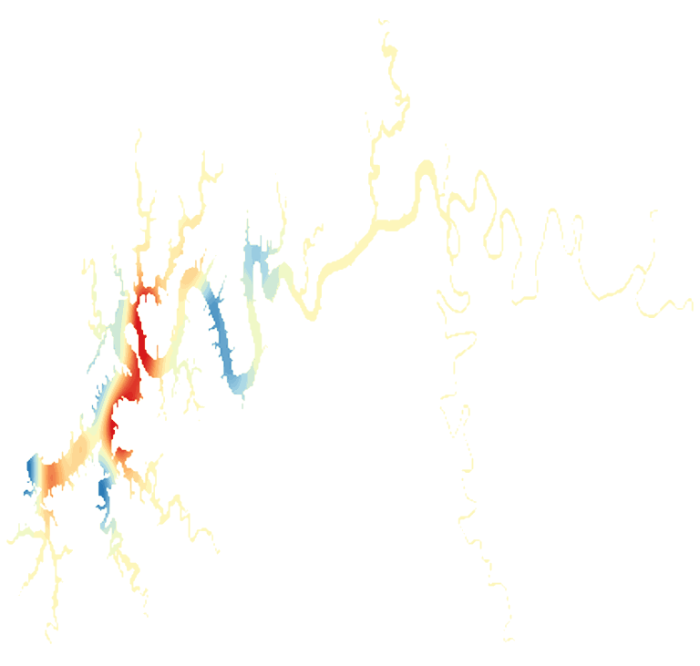

LakeScope › KY
Lake Cumberland today
Updated 2026-11-21 - Atlas Labs
Clear water, 57°F water, level falling, 2 ft below normal, calm this morning.
Water level
688.36 ft
U.S. Army Corps of Engineers - 2026-11-21
7-day trend: falling (-1.19 ft). Compared with normal for this date: -2.3 ft (same weeks, 2024-2025).
Water clarity and algae
Clear water Last clear view: a few days ago.
Surface temperature
57°F
seen from space on 2026-11-19

Ice
Open - 0% ice cover
Estimate from weather and satellite, not a measurement. Check the ice yourself before going on it.
Weather, next 3 days
| Day | Sky | High / low | Wind | Rain |
|---|---|---|---|---|
| Saturday | Partly Sunny | 70 / 42°F | 5 mph NE | 0% |
| Sunday | Sunny | 69 / 45°F | 3 mph SW | 12% |
| Monday | Partly Sunny | 57 / 29°F | 6 mph N | 12% |
Sunrise 06:25 - sunset 16:26 - Waxing gibbous. National Weather Service.
Get the LakeScope app: alerts and the 3-D view of Lake Cumberland